DAD Petshop Inventory System
A web-based inventory management solution designed to improve stock accuracy, simplify operational processes, and provide real-time visibility into inventory activities through QR Code integration.
Solving Inventory Challenges
Before the implementation of this system, inventory records were maintained manually. This approach often resulted in stock discrepancies, delayed reporting, and difficulties in monitoring product movement.

Real-Time Monitoring Dashboard
The dashboard acts as the central control panel, providing administrators with instant access to inventory statistics and recent activities.
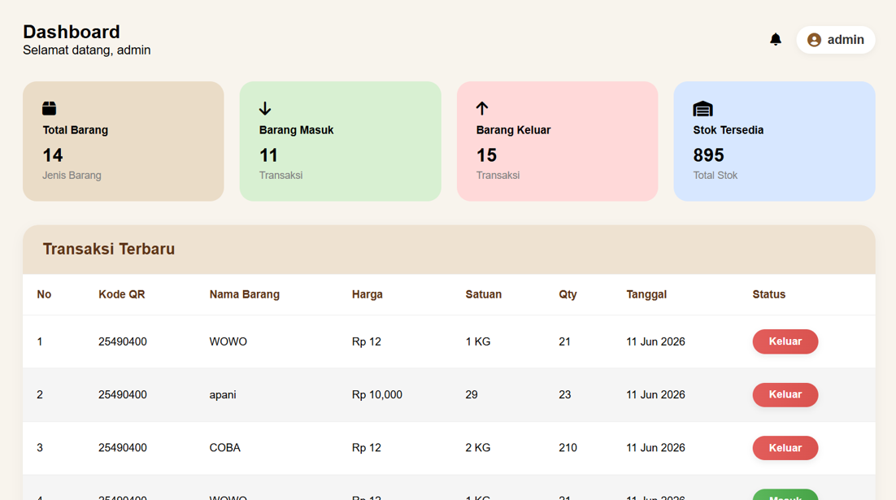
Managing Product Information
Administrators can efficiently manage inventory records by adding, editing, deleting, and searching products through a centralized interface.
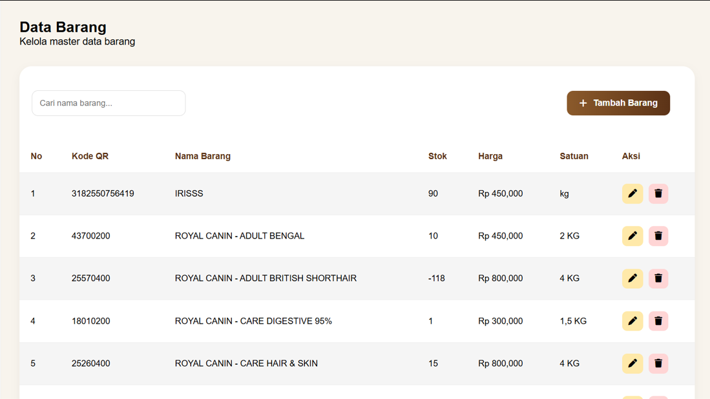
Faster Product Recognition
QR Code functionality enables rapid product identification, minimizing manual input and reducing the risk of operational errors.
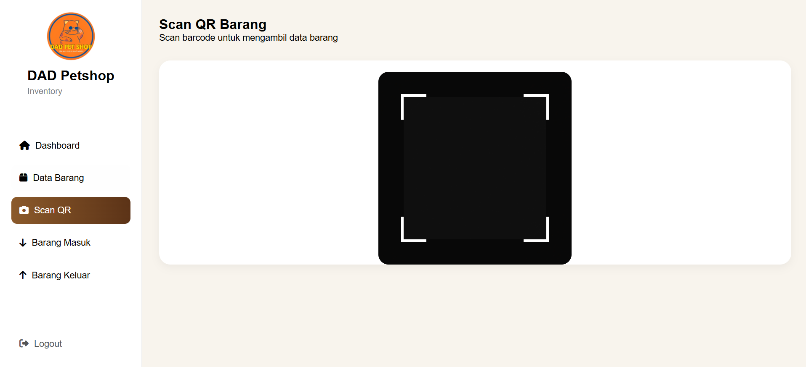
Incoming Goods Process
Every incoming transaction is automatically recorded to ensure inventory levels remain accurate and up to date.
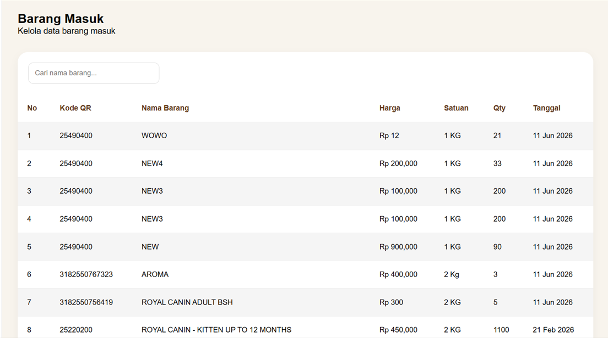
Outgoing Goods Tracking
The system records every outgoing transaction, allowing administrators to monitor sales-related stock movements efficiently.
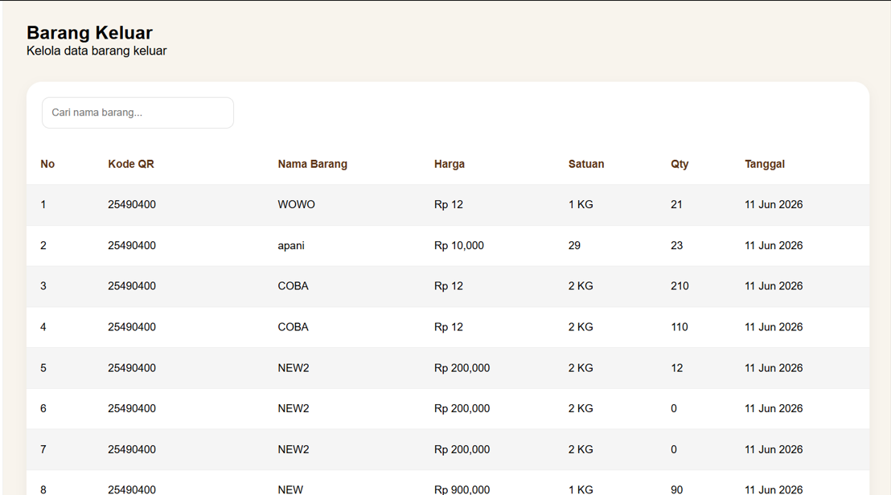
Business Intelligence & Reporting
In addition to operational management, the system provides dedicated reporting tools for business owners. These features enable data-driven decision making through inventory monitoring, transaction analysis, sales insights, and stock evaluation.
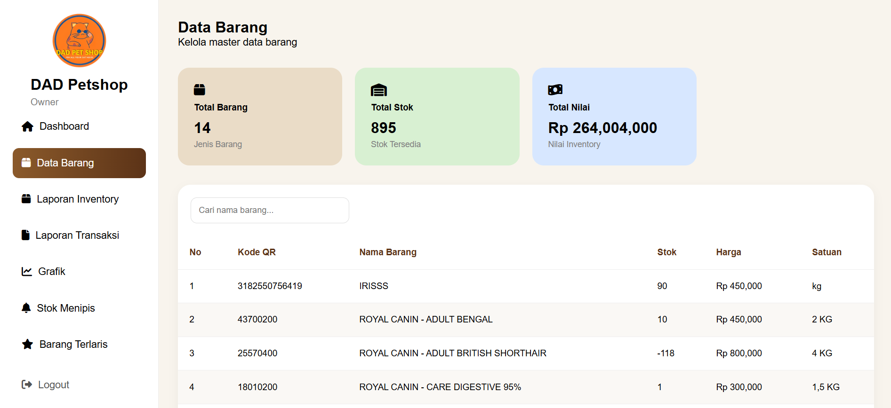
Inventory Overview
Provides a complete overview of all products, including stock levels, inventory value, and item availability to support strategic planning and stock control.
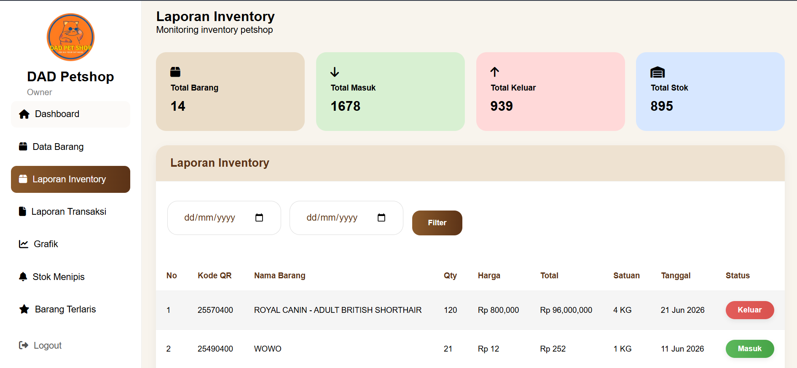
Inventory Reports
Allows owners to review inventory movement within a selected period, including incoming and outgoing stock transactions.
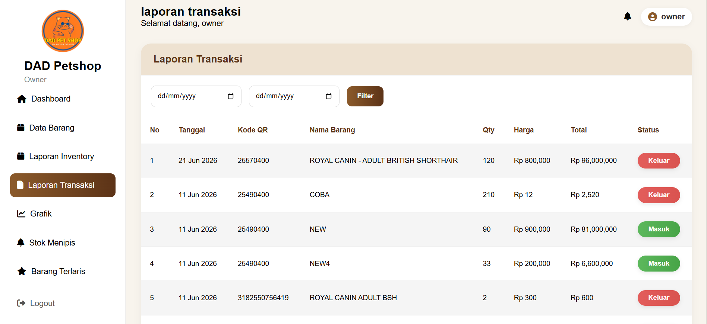
Transaction Reports
Generates detailed reports containing transaction history, item quantities, total values, and transaction status for financial monitoring purposes.
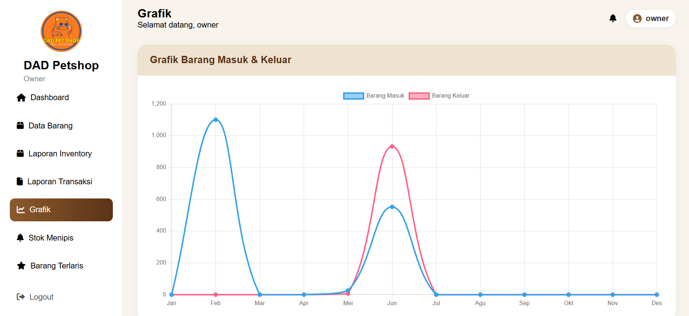
Business Analytics
Visualizes inventory trends through charts, helping owners identify seasonal demand, purchasing behavior, and stock movement patterns.
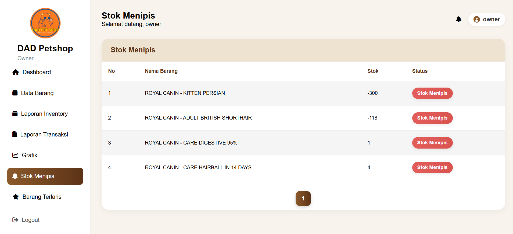
Low Stock Alerts
Automatically highlights products with critically low stock levels, enabling proactive replenishment decisions.
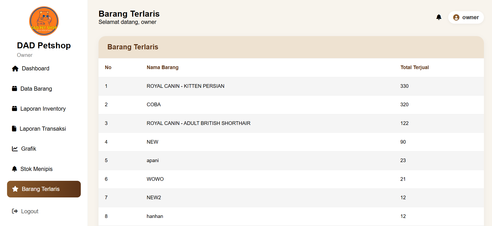
Best Selling Products
Identifies top-performing products based on sales volume, supporting purchasing strategies and inventory prioritization.
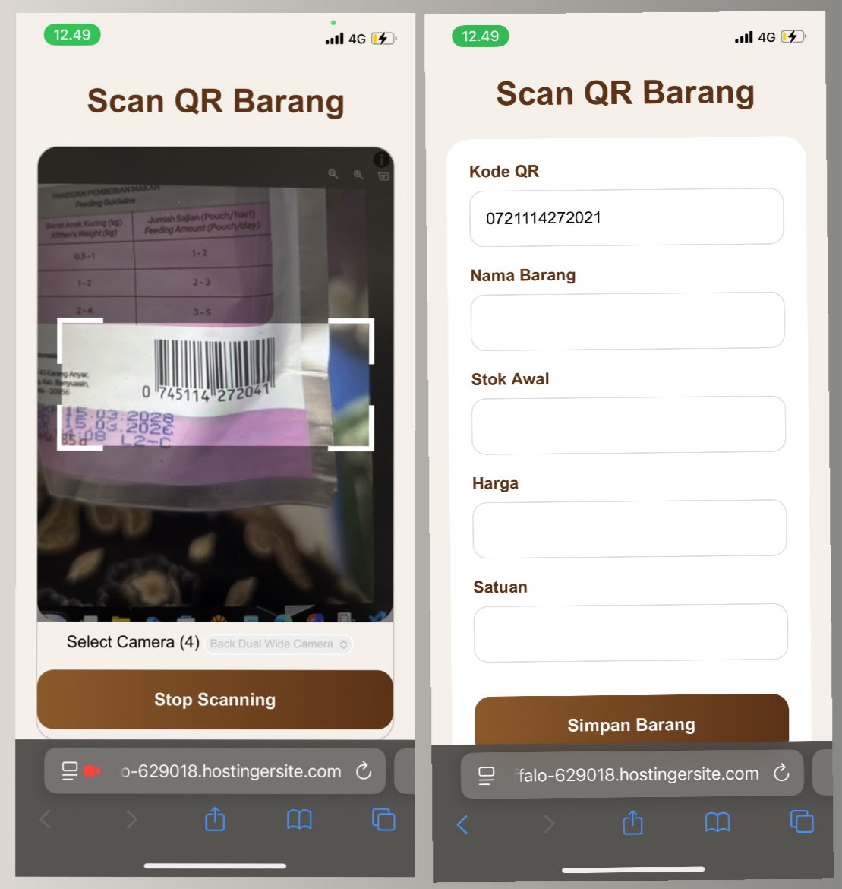
Mobile QR Stock Processing
The system supports mobile-based QR scanning to simplify inventory activities directly from smartphones. Staff can quickly identify products by scanning QR codes without manually searching for item information.
After the product is detected, users can continue the stock movement process by recording incoming or outgoing transactions instantly. This approach improves speed, accuracy, and flexibility in daily warehouse operations.